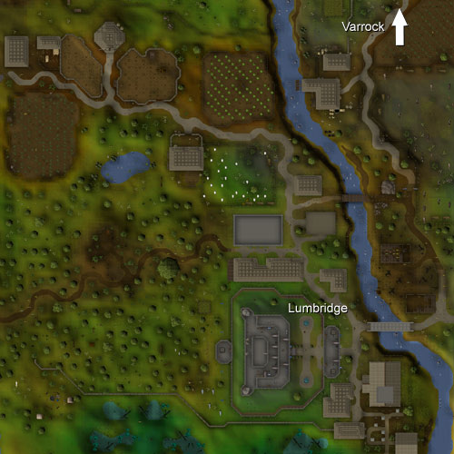

Lumbridge
Introduction | Location | Points of Interest | Personalities
Quests | The Creatures that Lurk | Miscellaneous
Quests | The Creatures that Lurk | Miscellaneous
Introduction

The town's buildings are all made of the same grey stone that has survived through the years. This is the sort of determination that has seen Lumbridge through even the hardest times.
Location

Lumbridge is the first town you come to when you start your adventures in RuneScape, so finding your way there after your first few expeditions should be no trouble.
It lies directly south of Varrock, the capital of Misthalin and seat of King Roald. East from Lumbridge is the toll gate to Al Kharid, a major desert town that spans the desert from the toll gate to the Shantay Pass. Travelling west from Lumbridge will deliver you to Draynor Village, a small town menaced by the ominous Draynor Manor.
As a rural township, there is a cluster of farms to the north where the locals scratch a living from the soil. There is also a windmill, which supplies most of the surrounding region with flour for bread, cakes and other baked treats. To the south of the town is Lumbridge Swamp, a sodden and dreary area filled with twisted mangroves.
Points of Interest

Adventurers new to the ways of heroism and the various skills of the hero should take some time to have a chat with the Lumbridge Tutors. These skilled warriors and craftsmen have decided to spend their time in Lumbridge teaching those younger and less experienced than themselves.
No guide to Lumbridge would be complete without mentioning the Castle. This mighty edifice has stood guard over the town for far longer than anyone can remember and looks set to continue in this way for many years and decades to come.
The farms to the north of Lumbridge are also worth a look, as they are usually quite well stocked and the farmers are not inclined to complain if you are forced to steal a cabbage out of hunger.
The church just north of the graveyard is a good place to recharge your Prayer points, and Father Aereck is always up for a chat about the finer points of modern theology.
The field to the north of the windwill was once the home of Gnomecopter Tours, but since it ceased trading Beefy Bill has set up residence in the surrounding paddock. He will send any unnoted beef, cowhides or flour you have to your bank for a 10% commission.
Personalities

Duke Horacio is the chivalrous ruler of Lumbridge. His family has a long history of watching over the town, and so he has become a careful and wise Duke, much as his father was before him.
|

Sigmund is the Duke's advisor and a citizen of good standing in Lumbridge. He isn't fully trusted by the townsfolk, though, as many believe he holds too much influence over the Duke's decisions.
|
|
| The Duke can be found in his chamber on the first floor of the castle. | Sigmund can be found with the Duke, probably advising him on matters of state. |

Duke Horacio's personal cook is a strange sort of man for his job. He seems constantly underprepared and more than a little bewildered by his post. Despite this, he occasionally manages to prepare food that mere commoners have no right to eat.
|

Phileas is the oldest and wisest citizen of Lumbridge, and he doesn't mind sharing his wisdom with any who ask. If you're new to the town and a bit lost he'll be more than happy to point you in the right direction.
|
|
| The Cook, obviously, can be found in the castle kitchen. | Phileas is never far from the signpost by the bridge across the Lum. |

Father Aereck is the local priest of Saradomin and is exceedingly proud of his church (it is over 230 years old, you know). He is also a keen organist, much to the annoyance of his neighbours as he plays late into the night.
|

Bob has been grinding hatchets for at least as long as anyone cares to remember, and in a town like Lumbridge his skills are always in high demand. He can be gruff at times, but if you're short of a hatchet and have some gold to spend he'll be right with you. Bob is also able to repair hatchets - for a fee, of course.
|
|
| Father Aereck can always be found looking after his church in the south-east of Lumbridge. | Bob is always in his shop just south of Lumbridge Castle. |
Quests
The following quests can be started in Lumbridge:
- Cook's Assistant
- Myths of the White Lands
- The Restless Ghost
- Sheep Shearer
- Rune Mysteries
- The Lost Tribe (Members)
- Recipe for Disaster (Members)
The Creatures that Lurk

Giant spiders are a common creature in the lands of RuneScape and can be dangerous foes. Mercifully, the giant spiders around Lumbridge are a puny breed and should present no difficulties, even to novice adventurers.
|

Goblins are one of the most widely spread races of RuneScape, such that if they were ever properly organised they might threaten larger towns. It is a good thing, then, that they are a poorly organised race and prone to bickering. Goblins are, like giant spiders, quite simple opponents.
|
|
| Giant spiders are most commonly found behind Lumbridge Castle. | The goblins around Lumbridge tend to mill about to the north and west of the town. There is also a significant cluster of goblins over the river to the east. |

Just like giant spiders and goblins, giant rats are a common sight. They are slightly tougher than goblins and giant spiders, but this still doesn't say much.
|
| Giant rats can be found west of Lumbridge Castle and in the swamps to the south of town. |
Miscellaneous
If you're in a hurry for a snack, Lumbridge is possibly the best place in the world. There are a couple of good Fishing spots on the far side of the river, overstocked farms to the north, and chickens. Chickens are a great source of food as they are very simple to kill, drop feathers for Fletching and when cooked properly they're quite tasty. On top of that, chickens lay eggs, so keep an eye out for the feathered creatures.
Cows are also useful, as they provide both beef and cowhide. They can be found north-east across the river on Farmer Groats's land. If you take a bucket you can milk the dairy cows.
Sheep in the pen in the north of Lumbridge will provide you with wool, though you will need to get some shears first.
There are a couple of spots in and around Lumbridge worth keeping an eye on if you're new to RuneScape:
- Behind Bob's Brilliant Axes is a knife spawn point.
- In front of Fred the Farmer's house (north of Lumbridge) is a chopping block with a bronze hatchet embedded in it.
- The southern stairwell of Lumbridge Castle has a mind rune spawn point.
- Next to the northern stairwell in the Castle is a bronze arrow spawn point.
- The Castle kitchen and basement hold a selection of equipment useful for improving your Cooking skills.
- The room next to Duke Horacio's chamber in Lumbridge Castle has a bronze dagger.
- On the east side of the river, Barfy Bill will teach members to make canoes to travel the River Lum.
- Do you enjoy knowing a few random statistics? There are two signs in Lumbridge - one outside the Castle gates and another at the entrance to the cow field - with some amusing numbers to entertain you.
- Those adventurers who have completed at least one subquest from the Recipe for Disaster quest will find the Culinaromancer's Chest in the Castle basement.

|
More articles in Cities and Towns
|
|